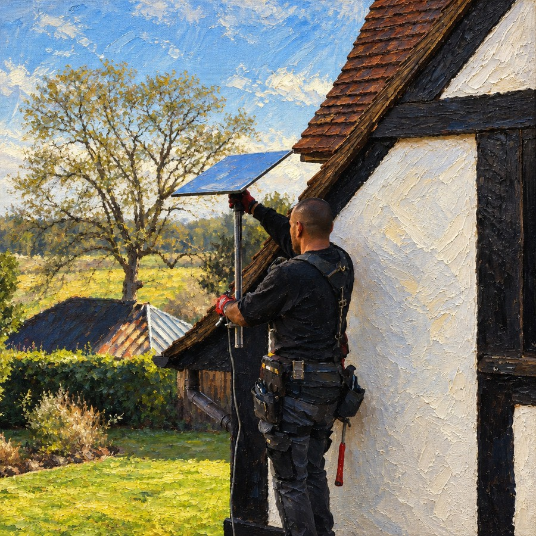

High-speed internet
for rural Sarawak
Starlink satellite broadband delivered, installed and supported by a local Malaysian team, from Kuching to the longhouses of the Baram.
Reliable & resilient
Starlink provides high-speed, low-latency satellite internet with more than 99% average uptime and reliable connectivity across rural Sarawak.
Designed to endure the elements, Starlink kits can withstand heavy rain, heat and harsh winds.
All sites operational
Last 90 days
Illustrative data
Sarawak · 30 sites
Live
Connected
Pending
Inactive
A bird's-eye view of every site
Deploy and manage Starlink across multiple villages without the overhead. Track uptime, bandwidth and hardware status for every installation from one screen.
Deployed fast
Most on-site installations are completed within 2–4 hours. Once you confirm your order, our certified technicians can usually be on site within 24–48 hours.
Complex multi-site rollouts are scheduled around your project's scope.
Desalink in numbers
99%
Average uptime across Starlink's network
2–4h
Typical on-site installation time
24–48h
From confirmed order to technician on site
7 days
WhatsApp support, every week of the year
How it works
Get started
Certified technicians handle mounting, cabling and setup
Local after-sales support, troubleshooting and plan management
Engineered by SpaceX
SpaceX is the world's leading provider of launch services and the only provider with an orbital-class reusable rocket, with deep experience in both spacecraft and on-orbit operations.
Questions, answered
Can't find what you need? Message us on WhatsApp
Is Starlink available in Malaysia?
Yes. Starlink is licensed in Malaysia and works across the whole country, including the interior of Sarawak where fibre and mobile coverage don't reach. All you need is a clear view of the sky.
Which parts of Sarawak do you install in?
We install across Sarawak: Kuching, Samarahan, Serian, Sri Aman, Betong, Sarikei, Sibu, Mukah, Kapit, Bintulu, Miri, Limbang and the longhouses of the Baram and Belaga. If your site is elsewhere in Malaysia, get in touch and we'll tell you what's possible.
How long does a Starlink installation take?
Most on-site installations are completed within 2–4 hours. Once you confirm your order, our certified technicians can usually be on site within 24–48 hours. Multi-site rollouts are scheduled around your project's scope.
Does Starlink work in heavy rain?
Yes. Starlink kits are built to withstand heavy rain, heat and strong winds. Very intense tropical downpours can briefly slow the connection, but service recovers on its own as the rain passes.
Can you set up Starlink for schools, clinics, plantations or multiple villages?
Yes. We plan and install multi-site rollouts and track uptime, bandwidth and hardware status for every site from the Desalink Terminal, so one team can look after dozens of locations.
What support do I get after installation?
Our local team gives you after-sales support, troubleshooting and plan management. You can reach us on WhatsApp 7 days a week, by phone Monday to Friday, or by email.